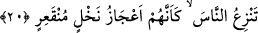

kelimesi, uğur anlamındaki “sa’d” kelimesinin zıddıdır, “uğursuz” demektir. Yâni,
“onların üzerinde uğursuzluğu sürekli, yahut ebediyyen sürecek olan zamanda” demektir.
Bu sebeple, insanların bir kısmı, ay’ın son çarşamba gününü uğursuz sayarlar.
İbnu’ş-Şeyh demiştir ki, insanların bazıları arasında ayın sonuna gelen çarşambayı
uğursuz saymak meşhur olmuştur. Bu kanâatlerini, “uğursuzluğu devamlı günde” âyet-i
kerîmesine dayandırmışlardır. Bilindiği gibi, uğursuzluk, düzeltenlere değil,
bozguncular üzerinedir. Zira o günün uğursuzluğunun peygamberler ve müminler
hakkında olduğu görülmemiştir.
Ravda edlı eserde, çarşamba günü bazı insanlara göre uğursuzdur. Aydaki
çarşambanın sonunda olup devretmeyen ise daha uğursuzdur, denir.
İbn Abbâs (r.a.)’den merfûan rivâyet edildiğine göre, aydaki çarşambanın sonu,
uğursuzluğu devamlı gündür.
Şair de demiştir ki:
Erkenci için seni görmek uğursuzluktur.
Yüzün ise devr etmeyen çarşambadır.
Halbuki, çarşamba günü yıkanmak iyidir. Zira bu günde sulara cennetten bir yağ
karışır, denir. Yine, işlere çarşamba günü başlamak övülmüştür.
“Uğursuzluğu devamlı” demek, “onları yok edinceye kadar sürecek zaman” demektir.
Bu sebeple âyet-i kerîme’de geçen gün, vakit anlamındadır. Aksi halde, bir günün,
onların mahv oldukları sekiz gün ve yedi gece sürmesi mümkün değildir. Her iki yönden
de, zaman ve anlam bakımından küçüğü ve büyüğü dahil olmak üzere süreklilik hepsini
kapsamaktadır. Böyle olunca da, uğursuzluğun devamı, şahıslara nisbetle benzer şekilde
hepsine tabi; yahut acılığı şiddetli anlamındadır. Hûd (a.s.) kavminin azabının
başlangıcı, ayın son çarşambasıdır. Yâni insanı âciz bırakan azap, ayın son çarşamba
sabahından diğer çarşamba gününün akşamına kadar sürmüştür.
Rivâyete göre, onların azabda geçen aralıksız sekiz günlerinin son günü Safer ayının
son gününe rastlayan çarşamba günü idi.
Bu gün ve gecelerin ardarda geldiğini “Allah onu, ardarda yedi gece, sekiz gün
onların üzerine musallat etti. Öyle ki (eğer orada olsaydın) o kavmi; içi boş hurma
kütükleri gibi oracıkta yere serilmiş halde görürdün” (el-Hakka, 68/7) âyeti haber
vermektedir.
20. O rüzgâr, insanları, sökülmüş hurma kütükleri gibi yere seriyordu.
“İnsanları söküp deviriyordu.” Bir rüzgar, kasırga ki, onları yerlerinden